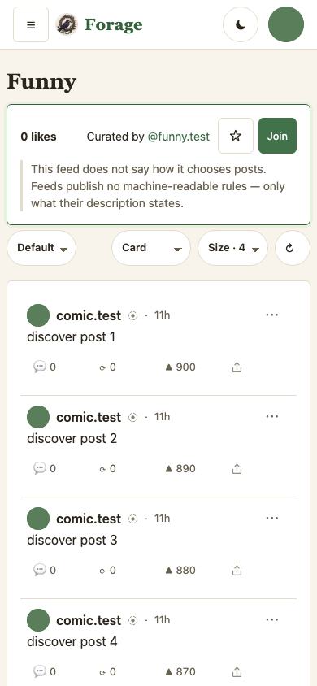
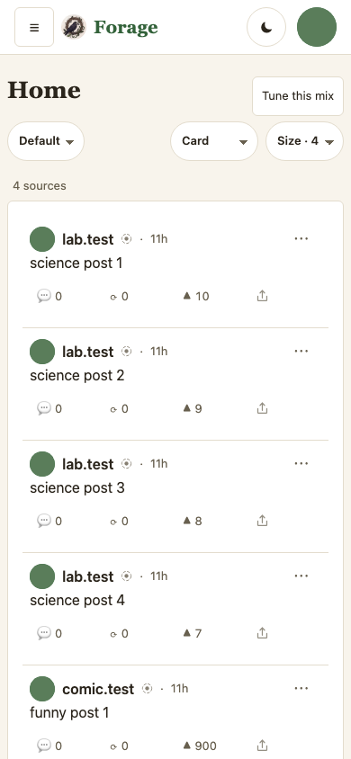
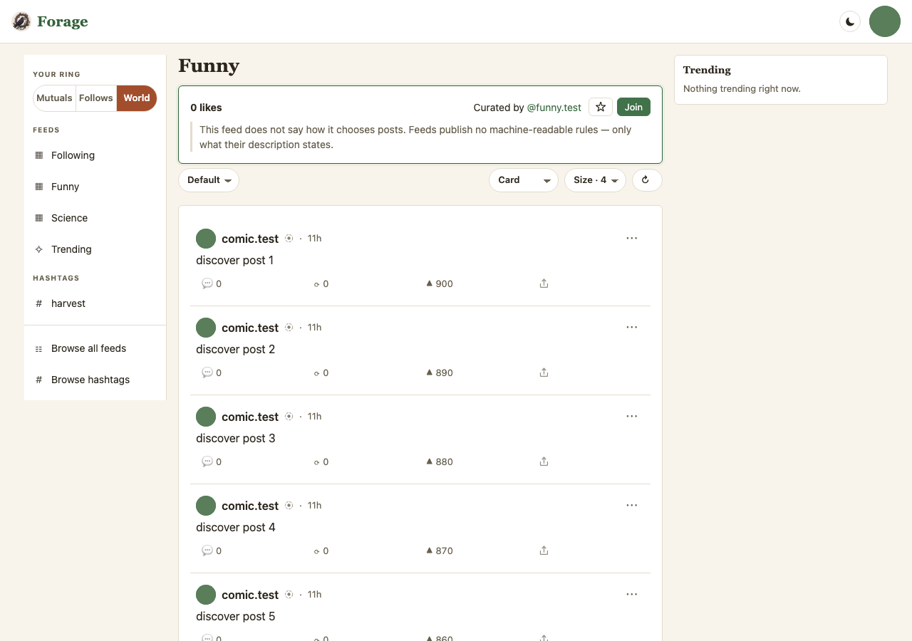
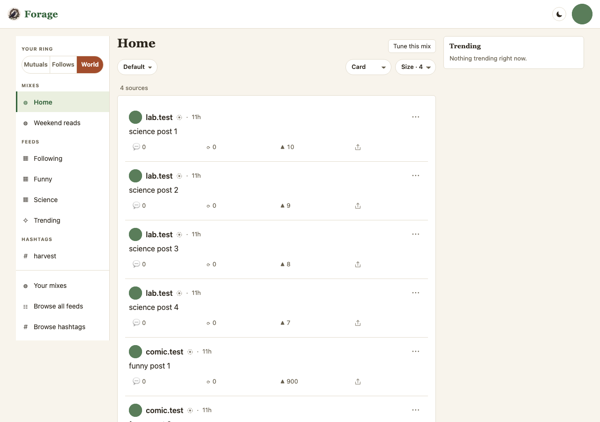
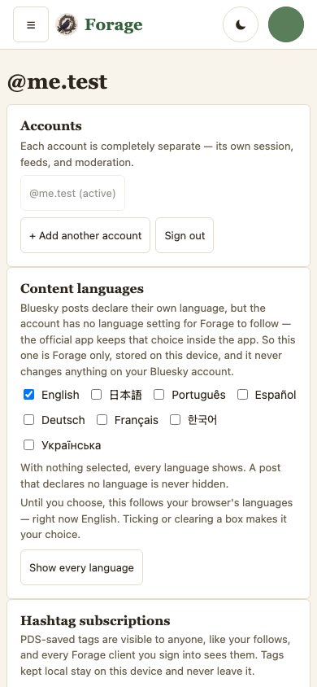
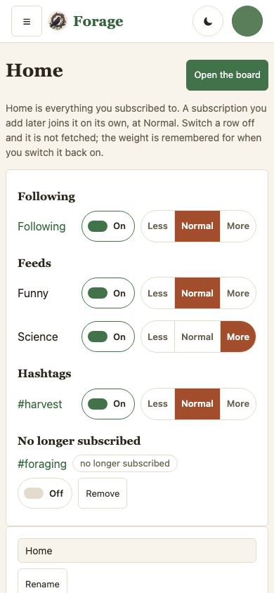
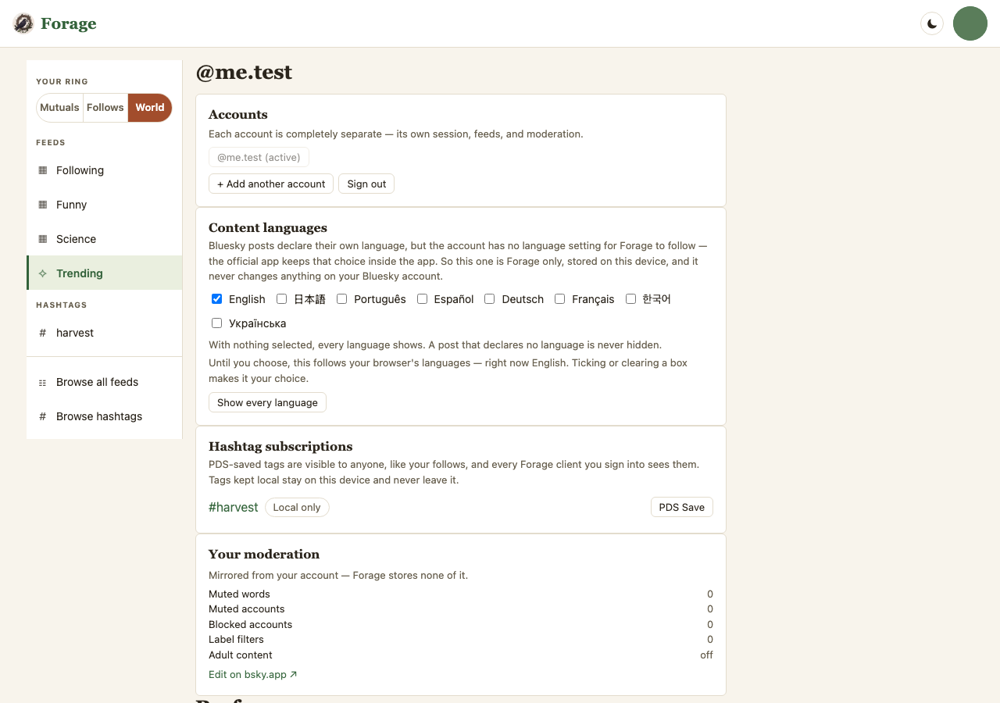
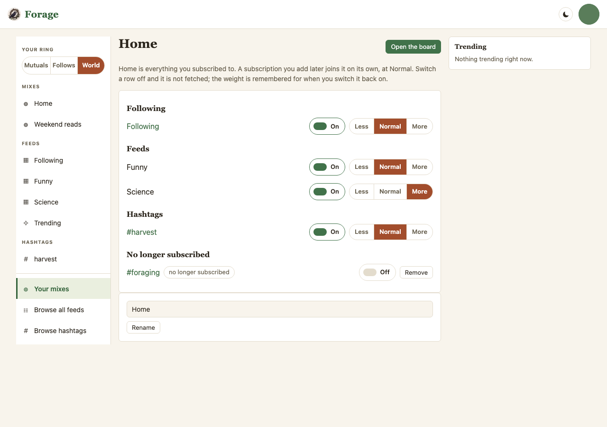

Eight frames, two surfaces, phone and desktop. Captures of the engine, not
drawings: Current is forage@68ab504 (main), Proposed is
forage@eae83dc (claude/mixes), both by scripts/mock-snaps.mjs
at 390×844 and 1280×900 against e2e/harness/mock-mix.mjs: a reader following
accounts, with two saved feeds (Funny, posts in the hundreds of likes; Science, posts with ten)
and one hashtag, every source answering with its own posts. Neither Proposed address exists on
main, so Current is the nearest surface there: Discover for a board, /me for where
subscriptions are managed. Plan: plans/2026-09-08-plan-mixes.md.
Read a weight as one number that every sort reads. Less · Normal · More is ×½ · ×1 · ×2. On the default sort it is a share of the deal — Science at More deals four posts per round beside Following's two — and under Top and Hot it multiplies the score, so a small feed's posts can outrank a big feed's when the reader says More. New is by time and says so. The switch is not a fourth notch: off is not fetched, and the weight waits for the row to come back.
The door for a signed-in reader with nothing remembered (D5). The info line under the toolbar counts the sources and, when one did not answer, names it. Science is at More in this capture, so its four posts open the board before Funny's two — the deal made visible. The sidebar (desktop frame) gains a Mixes section above Feeds, Home first, then the mixes the reader made, and Your mixes in the browse cluster below the rule.




Grouped by kind — Following, Feeds, Hashtags — label left, controls right, every control at the 44px floor. A subscription the reader has since dropped keeps its row, greyed and marked no longer subscribed, with Remove where the dial was: seen, not silently lost. Below the rows, rename; a mix that is not Home also has a two-press delete. Pages, not modals.




| # | Question | Answer |
|---|---|---|
| 1 | What is a weight? | One multiplier, ×½ · ×1 · ×2, that every sort reads — a share of the deal on Default, a factor on likes under Top and on engagement inside Hot's log, nothing under New. Owner: "weighting upvotes so smaller feeds still surface … it has to play nice with top etc sort." |
| 2 | Where is Off? | A switch that remembers the weight. Off is not fetched. |
| 3 | A new mix starts as? | Empty — everything listed, everything off. Home starts with everything on. |
| 4 | Where does a mix live? | This device, for now; a fyi.forage.mix record later, on the tag-subscription pattern. |
| 5 | Is Home the door? | Yes for a first-time reader; a returning reader keeps the board they left. |
| 6 | A bound on the fan-out? | No cap. Measured live: twelve sources cost 0.7 s warm and 2.3 s cold; what scaled was payload, so each source is asked for a small page (12) behind a per-source timeout, and the board names what did not answer. |
| 7 | Keep the sort toolbar? | Yes — Top and Hot are where a weight lifts a small feed. |
| 8 | A post in two sources? | Once: the first dealer's under Default, the heavier weight under a score. |
| 9 | Lists? | Rows like feeds. |